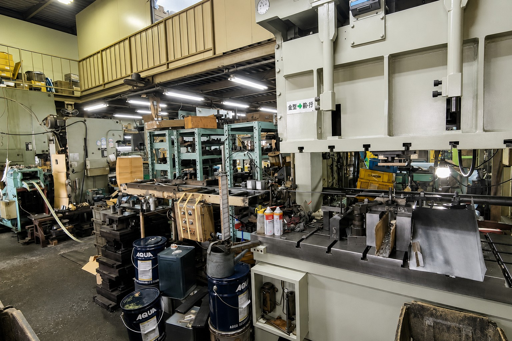
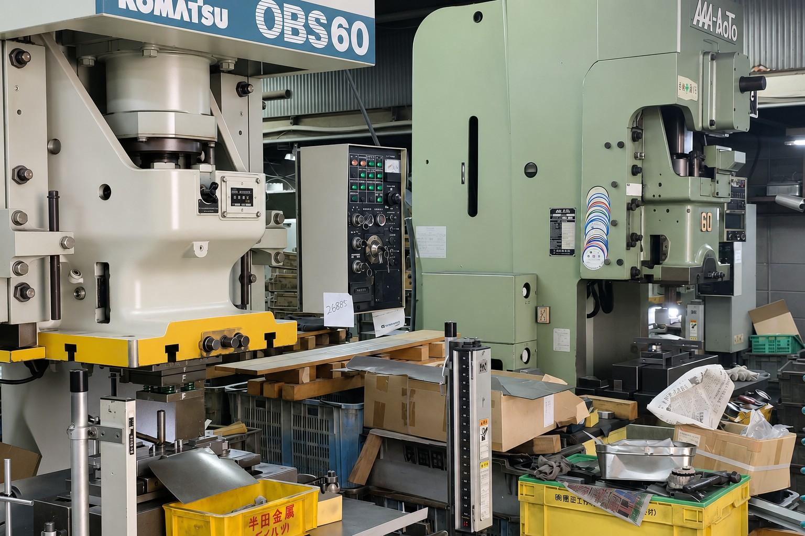

ステンレス加工
耐久性や意匠性が求められる製品・部材の製作に対応します。

Precision Metal Works
ステンレス・鉄・アルミ加工を中心に、建築金物や特注製作まで。
小ロットから柔軟に対応します。
About
株式会社園田工作所は、金属加工を通じてお客様のものづくりを支える会社です。長年培ってきた技術と現場対応力を活かし、用途やご要望に合わせた製作を行っています。
既製品では対応しにくい一点物・小ロットのご相談にも、現場目線で柔軟に対応いたします。
Service
耐久性や意匠性が求められる製品・部材の製作に対応します。
用途に合わせた素材選定と加工で、各種部材を製作します。
建築現場で使用される金物や部材の製作に対応します。
一点物や少量製作など、既製品では対応しにくいご相談にも柔軟に対応します。
Strength
用途・設置環境・数量に合わせて、無理のない仕様を検討します。
一点物や少量製作など、量産前の相談にも柔軟に対応します。
現場で必要とされる金物・部材の製作を承ります。
Factory

金属加工に必要な設備を備え、建築金物や各種金属部材の製作に対応しています。ご相談内容に合わせて、最適な加工方法を検討します。

現場で使いやすい形状や仕様を考えながら製作します。既製品では合わない部材や、数量の少ないご相談にも対応します。
Works
建築金物、各種金属部材、特注製作品など、お客様の用途に合わせた製作に対応しています。
Flow
図面・写真・寸法メモなどがあれば、あわせてお送りください。
材質・数量・納期・用途を確認し、製作方法を検討します。
仕様を確認したうえで、お見積もりをご案内します。
確定した内容に沿って製作し、納品いたします。
Movie
Contact
製作のご相談・お見積もりはお気軽にお問い合わせください。
| 会社名 | 株式会社園田工作所 |
|---|---|
| 所在地 | 豊中市庄内栄町4-21-7 |
| 電話番号 | 06-6334-9237 |
| FAX番号 | 06-6334-9055 |
| 対応内容 | ステンレス・鉄・アルミ加工、建築金物、特注製作、小ロット製作 |